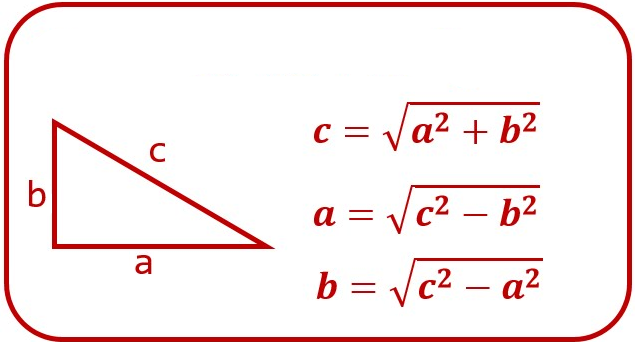
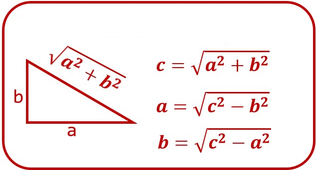
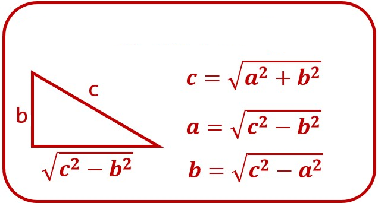
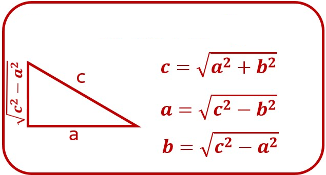
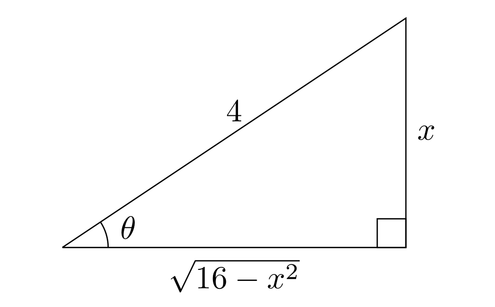
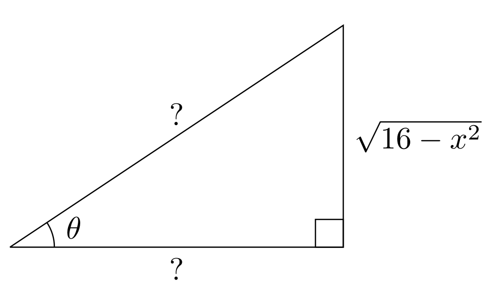
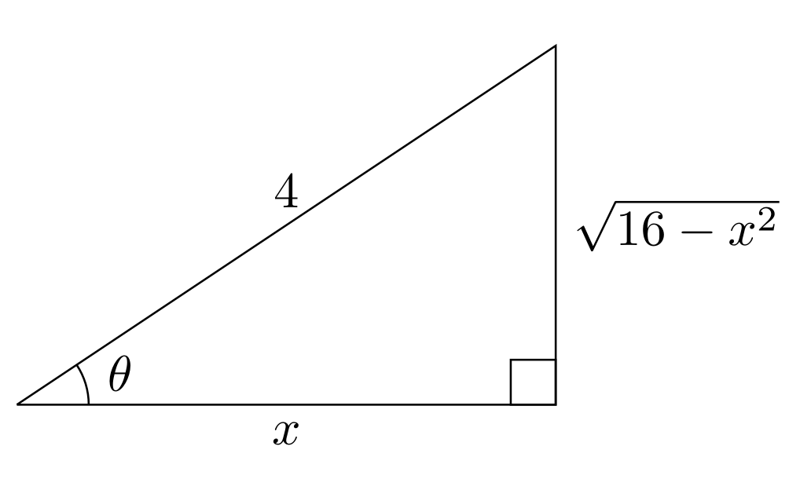
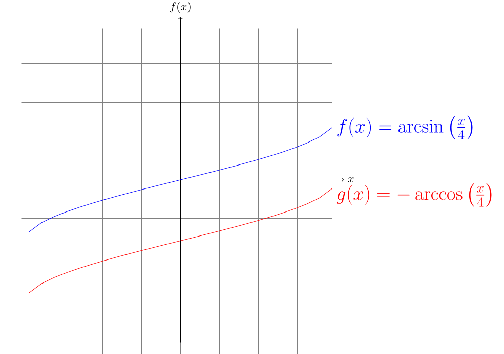
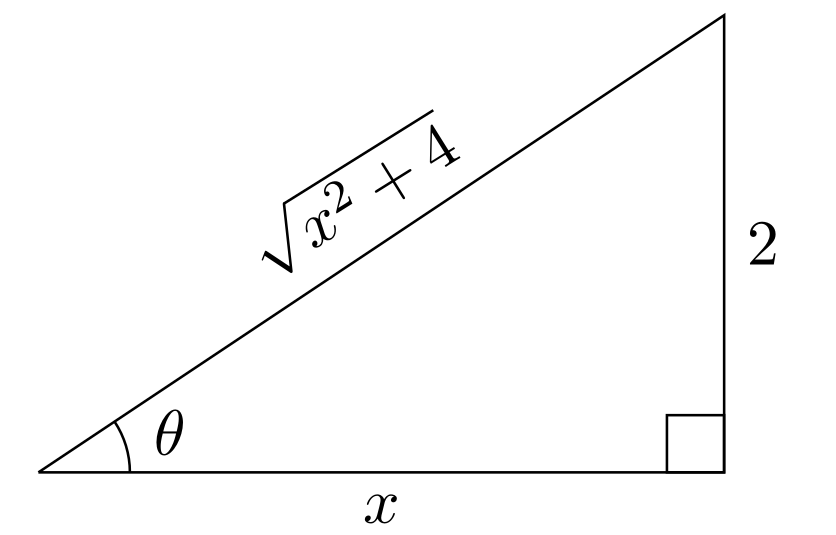
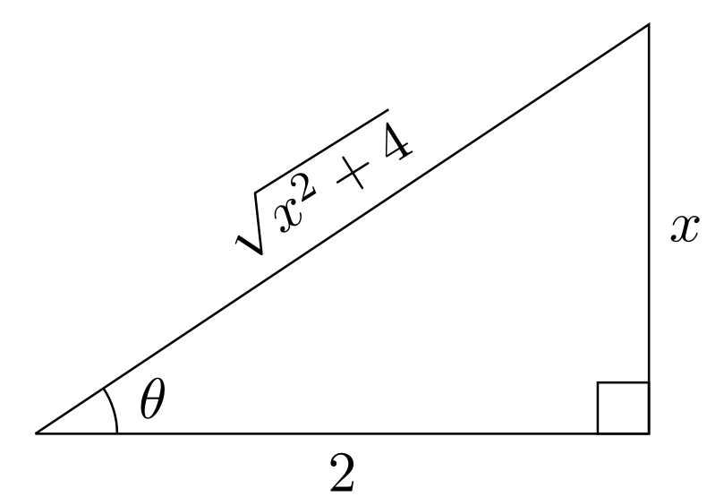

Integrales: Sustitución trigonométrica y fracciones parciales
Sustitución trigonométrica
La sustitución trigonométrica es una técnica utilizada para resolver integrales que involucran raíces cuadradas de expresiones cuadráticas. Esta técnica se basa en la relación entre las funciones trigonométricas y las raíces cuadradas.
Tabla
Una opción (que no recomiendo) es usar la siguiente tabla de sustituciones trigonométricas: \[ \begin{array}{|c|c|c|} \hline \text{Forma} & \text{Sustitución} & \text{Integral resultante} \\ \hline \sqrt{a^2 - x^2} & x = a \sin(\theta) & \int a \cos(\theta) d\theta \\ \sqrt{a^2 + x^2} & x = a \tan(\theta) & \int a \sec^2(\theta) d\theta \\ \sqrt{x^2 - a^2} & x = a \sec(\theta) & \int a \sec(\theta) \tan(\theta) d\theta \\ \hline \end{array} \]
Creando un triangulo
En primer lugar, recordemos el teorema de Pitágoras: \[ a^2 + b^2 = c^2 \] Si despejamos una de las variables, por ejemplo \(c\) (la hipotenusa), tenemos: \[ c = \sqrt{a^2 + b^2} \]
Si despejamos \(a\) (un cateto), tenemos: \[ a = \sqrt{c^2 - b^2} \]
Despejando \(b\) (el otro cateto), tenemos: \[ b = \sqrt{c^2 - a^2} \]




¿Porqué importan los triángulos?
Permiten deducir las sustitución en vez de memorizarlas.
Ejemplo
\[ \int \frac{1}{\sqrt{16 - x^2}} dx \]
El denominador se parece al despeje de un cateto, no importa si es el cateto opuesto o adyacente, lo importante es que se parece a la raíz cuadrada de una resta.
Asumimos que el cateto adyacente es \(\sqrt{16 -x^2}\), esto se parece a el despeje de \(a\) (el cateto adyacente), por lo tanto, podemos escribir:
\[ \sqrt{16 - x^2} \cong \sqrt{c^2 - b^2} \]
De aquí podemos deducir que \(c = 4\) y \(b = x\).
Por lo tanto, podemos armar el siguiente triángulo:

Con esto podemos deducir esta expresion: \[ \sin(\theta) = \frac{x}{4} \] Despejando \(x\) tenemos: \[ x = 4 \sin(\theta) \]
Esta relación por si misma no nos sirve de nada, pero si la derivamos, podemos obtener una relación entre \(dx\) y \(d\theta\): \[ x = 4 \sin(\theta) \] \[ dx = 4 \cos(\theta) d\theta \]
Reemplazando en la integral: \[ \int \frac{1}{\sqrt{16 - x^2}} dx = \int \frac{1}{\sqrt{16 - (4 \sin(\theta))^2}} 4 \cos(\theta) d\theta \] Desarrollando la raíz: \[ 4 \int \frac{\cos(\theta) }{\sqrt{16 - 16 \sin^2(\theta)}} d\theta \]
Sacando el factor común de la raíz: \[ 4 \int \frac{\cos(\theta) }{\sqrt{16(1 - \sin^2(\theta))}} d\theta \] \[ 4 \int \frac{\cos(\theta) }{\sqrt{16} \sqrt{1 - \sin^2(\theta)}} d\theta \] \[ 4 \int \frac{\cos(\theta) }{4 \sqrt{1 - \sin^2(\theta)}} d\theta \]
\[ \int \frac{\cos(\theta) }{\sqrt{1 - \sin^2(\theta)}} d\theta \]
Recordemos la identidad: \[ \sin^2(\theta) + \cos^2(\theta) = 1 \] Si despejamos \(\cos(\theta)\), tenemos: \[ \cos(\theta) = \sqrt{1 - \sin^2(\theta)} \] Reemplazando en la integral: \[ \int \frac{\cos(\theta) }{\sqrt{1 - \sin^2(\theta)}} d\theta = \int \frac{\cos{( \theta )}}{\cos{( \theta )}} d\theta \] \[ \int 1 d\theta = \theta + C \]
Ahora tenemos que volver a la variable original, para eso, recordemos la relación que teníamos entre \(x\) y \(\theta\): \[ x = 4 \sin(\theta) \] Despejando \(\theta\) tenemos: \[ \sin(\theta) = \frac{x}{4} \] \[ \theta = \arcsin{\left(\frac{x}{4}\right)} \] Reemplazando en el resultado: \[ \int \frac{1}{\sqrt{16 - x^2}} dx = \arcsin{\left(\frac{x}{4}\right)} + C \]
Ejercicio 1
¿Y si hubieramos sido el cateto opuesto? Realiza el mismo proceso, pero asumiendo que el cateto opuesto es \(\sqrt{16 - x^2}\).

Usando el teorema de Pitágoras, podemos deducir que: \[ b = \sqrt{c^2 - a^2} \cong \sqrt{16 - x^2} \] Por lo que \(c\) es la hipotenusa, \(a\) es el cateto opuesto y \(b\) es el cateto adyacente. \[ c = 4 \hspace{0.3cm} a = 4 \]
Por lo que el triángulo quedaría así:

Ahora podemos utilizar una función trigonométrica para relacionar el cateto restante con la hipotenusa: \[ \cos(\theta) = \frac{x}{4} \] Despejando \(x\) tenemos: \[ x = 4 \cos(\theta) \] Derivando nuevamente: \[ dx = -4 \sin(\theta) d\theta \]
Reemplazando en la integral: \[ \int \frac{1}{\sqrt{16 - x^2}} dx = \int \frac{1}{\sqrt{16 - (4 \cos(\theta))^2}} (-4 \sin(\theta)) d\theta \] Desarrollando la raíz: \[ 4 \int \frac{-\sin(\theta) }{\sqrt{16 - 16 \cos^2(\theta)}} d\theta \] Factorizando: \[ 4 \int \frac{-\sin(\theta) }{\sqrt{16(1 - \cos^2(\theta))}} d\theta \]
Sacando el factor común de la raíz: \[ 4 \int \frac{-\sin(\theta) }{4 \sqrt{1 - \cos^2(\theta)}} d\theta \] \[ \int \frac{-\sin(\theta) }{\sqrt{1 - \cos^2(\theta)}} d\theta \] Recordemos nuevamente la identidad: \[ \sin^2(\theta) + \cos^2(\theta) = 1 \] Si despejamos \(\sin(\theta)\), tenemos: \[ \sin(\theta) = \sqrt{1 - \cos^2(\theta)} \]
Reemplazando en la integral: \[ \int \frac{-\sin(\theta) }{\sqrt{1 - \cos^2(\theta)}} d\theta = \int \frac{-\sin{( \theta )}}{\sin{( \theta )}} d\theta \] \[ \int -1 d\theta = -\theta + C \] Ahora tenemos que volver a la variable original, para eso, recordemos la relación que teníamos entre \(x\) y \(\theta\): \[ x = 4 \cos(\theta) \]
\[ \cos(\theta) = \frac{x}{4} \]
Despejando \(\theta\) tenemos: \[ \theta = \arccos{\left(\frac{x}{4}\right)} \] Por lo que reemplazando en el resultado: \[ \int \frac{1}{\sqrt{16 - x^2}} dx = -\arccos{\left(\frac{x}{4}\right)} + C \]
¿Es este resultado válido?
Si
Una integral indefinida es en realidad una antiderivada, en otras palabras una familia de funciones que tienen la misma derivada. Por lo tanto, ambos son válidas, si graficamos ambas funciones, podemos ver que son iguales, pero desplazadas en el eje \(y\):

Ejercicio 2
Resuelve la siguiente integral usando la sustitución trigonométrica: \[ \int \frac{dx}{( x^2 + 4 )^{3/2}} \]
Inmediatamente podemos ver que el denominador se parece a la raíz cuadrada de una suma, por lo que podemos asumir que es la hipotenusa de un triángulo rectángulo. Por lo que podemos deducir que: \[ \sqrt{x^2 + 4} \cong \sqrt{a^2 + b^2} \] Por lo que \(a = x\) (cateto adyacente) y \(b = 2\) (cateto opuesto).

Basados en esto podemos usar la relación trigonométrica: \[ \tan(\theta) = \frac{2}{x} \] Despejando \(x\) tenemos: \[ x = \frac{2}{\tan(\theta)} \] Esta sustitución no es muy común, pero es válida. Una más sencilla se consiguería si asumimos que el cateto opuesto es \(x\) y el cateto adyacente es \(2\).

Ahora, usando tangente nuevamente, tenemos: \[ \tan(\theta) = \frac{x}{2} \] Despejando \(x\) tenemos: \[ x = 2 \tan(\theta) \] Derivando: \[ dx = 2 \sec^2(\theta) d\theta \] Reemplazando en la integral: \[ \int \frac{dx}{( x^2 + 4 )^{3/2}} = \int \frac{2 \sec^2(\theta) d\theta}{( (2 \tan(\theta))^2 + 4 )^{3/2}} \]
Desarrollando el denominador: \[ \int \frac{2 \sec^2(\theta) d\theta}{( 4 \tan^2(\theta) + 4 )^{3/2}} \] Sacando el factor común: \[ \int \frac{2 \sec^2(\theta) d\theta}{( 4 ( \tan^2(\theta) + 1 ) )^{3/2}} \] Sacando el 2 como constante: \[ 2\int \frac{\sec^2(\theta) d\theta}{4^{3/2} ( \tan^2(\theta) + 1 )^{3/2}} \] \[ \frac{2}{8} \int \frac{\sec^2(\theta) d\theta}{( \tan^2(\theta) + 1 )^{3/2}} \]
\[ \frac{1}{4} \int \frac{\sec^2(\theta) d\theta}{( \tan^2(\theta) + 1 )^{3/2}} \] Para este ejercicio, hay una identidad trigonométrica que nos puede ayudar: \[ \sec^2(\theta) = 1 + \tan^2(\theta) \] Reemplazando en la integral: \[ \frac{1}{4} \int \frac{( 1 + \tan^2(\theta) ) d\theta}{( \tan^2(\theta) + 1 )^{3/2}} \] Esto se puede simplificar: \[ \frac{1}{4} \int \frac{( 1 + \tan^2(\theta) ) d\theta}{( 1 + \tan^2(\theta) )^{3/2}} \]
\[ \frac{1}{4} \int \frac{( 1 + \tan^2(\theta) ) d\theta}{( 1 + \tan^2(\theta) )^{3/2}} = \frac{1}{4} \int ( 1 + \tan^2(\theta) )^{-1/2} d\theta \] Usamos la misma identidad:
\[ \sec^2(\theta) = 1 + \tan^2(\theta) \] \[ \frac{1}{4} \int \sec^2(\theta)^{-1/2} d\theta \] \[ \frac{1}{4} \int \frac{1}{\sqrt{\sec^2(\theta)}} d\theta \] \[ \frac{1}{4} \int \frac{1}{\sec(\theta)} d\theta \]
Recordemos la definición de secante: \[ \sec(\theta) = \frac{1}{\cos(\theta)} \] Por lo que podemos escribir: \[ \frac{1}{4} \int \frac{1}{\sec(\theta)} d\theta = \frac{1}{4} \int \cos(\theta) d\theta \] La cual es una integral básica: \[ \frac{1}{4} \int \cos(\theta) d\theta = \frac{1}{4} \sin(\theta) + C \]
Ahora tenemos que volver a la variable original, para eso, podemos usar el mismo triangulo:
El seno es: \[ \sin(\theta) = \frac{x}{\sqrt{x^2 + 4}} \]
Reemplazando en el resultado: \[ \int \frac{dx}{( x^2 + 4 )^{3/2}} = \frac{1}{4} \sin(\theta) + C \] \[ \int \frac{dx}{( x^2 + 4 )^{3/2}} = \frac{1}{4} \frac{x}{\sqrt{x^2 + 4}} + C \]
Fracciones Parciales
Las fracciones parciales son una técnica utilizada para descomponer una función racional en una suma de fracciones más simples. Esta técnica es especialmente útil para resolver integrales que involucran funciones racionales.
Caso 1
Denominador lineal (grado menor al del denominador) \[ \frac{P(x)}{(ax+b)(cx+d)(ex+f)} = \frac{A}{ax+b} + \frac{B}{cx+d} + \frac{C}{ex+f} \]
Caso 2
Denominador lineal repetido \[ \frac{P(x)}{(ax+b)(cx+d)^2(ex+f)} = \frac{A}{ax+b} + \frac{B}{cx+d} + \frac{C}{(cx+d)^2} + \frac{D}{ex+f} \]
Caso 3
Denominador cuadrático irreducible \[ \frac{P(x)}{(x^2+1)} = \frac{Ax+B}{x^2+1} \]
Caso 4
Denominador cuadrático irreducible repetido \[ \frac{P(x)}{(x^2+1)^2} = \frac{Ax+B}{x^2+1} + \frac{Cx+D}{(x^2+1)^2} \]
Ejemplo
\[ \int \frac{4}{x^3 + 2x^2 - 3x} dx \]
Primero, factorizamos el denominador: \[ x^3 + 2x^2 - 3x = x(x^2 + 2x - 3) = x(x+3)(x-1) \] Reescribiendo la integral:
\[ \int \frac{4}{x(x+3)(x-1)} dx \] Ahora, descomponemos la fracción en fracciones parciales: \[ \frac{4}{x(x+3)(x-1)} = \frac{A}{x} + \frac{B}{x+3} + \frac{C}{x-1} \] Multiplicando ambos lados por el denominador común: \[ 4 = A(x+3)(x-1) + Bx(x-1) + Cx(x+3) \]
Desarrollamos: \[ 4 = A(x^2 + 2x - 3) + B(x^2 - x) + C(x^2 + 3x) \] \[ 4 = Ax^2 + 2Ax - 3A + Bx^2 - Bx + Cx^2 + 3Cx \] Agrupamos términos basados en su grado: \[ 4 = (A + B + C)x^2 + (2A - B + 3C)x + (-3A) \] Igualamos los coeficientes, escribiendo 0 para los términos que no aparecen: \[ 0x^2 + 0x + 4 = (A + B + C)x^2 + (2A - B + 3C)x + (-3A) \]
Esto nos da un sistema de ecuaciones: \[ A + B + C = 0 \hspace{1cm} (1) \] \[ 2A - B + 3C = 0 \hspace{1cm} (2) \] \[ -3A = 4 \hspace{1cm} (3) \] De la ecuación (3), podemos despejar \(A\): \[ A = -\frac{4}{3} \] Ahora, sustituimos \(A\) en las ecuaciones (1) y (2): \[ -\frac{4}{3} + B + C = 0 \hspace{1cm} (1) \] \[ 2\left(-\frac{4}{3}\right) - B + 3C = 0 \hspace{1cm} (2) \]
Aqui, podemos despejar cuaquier variable en cualquier ecuación restante, por ejemplo \(B\) en la ecuación (1):
\[ B = \frac{4}{3} - C \hspace{1cm} (1) \] Y reemplazarlo en la ecuación (2): \[ 2\left(-\frac{4}{3}\right) - \left(\frac{4}{3} - C\right) + 3C = 0 \] \[ -\frac{8}{3} - \frac{4}{3} + C + 3C = 0 \] \[ -\frac{12}{3} + 4C = 0 \] \[ 4C = 4 \rightarrow C = 1 \]
Ahora que tenemos C, podemos reemplazarlo en el despeje de \(B\) de la ecuación (1): \[ B = \frac{4}{3} - C \] \[ B = \frac{4}{3} - 1 \]
\[ B = \frac{4}{3} - \frac{3}{3} \] \[ B = \frac{1}{3} \]
Tenemos los valores de \(A\), \(B\) y \(C\): \[ A = -\frac{4}{3} \hspace{1cm} B = \frac{1}{3} \hspace{1cm} C = 1 \]
Reemplazando en la descomposición de fracciones parciales: \[ \frac{4}{x(x+3)(x-1)} = \frac{-\frac{4}{3}}{x} + \frac{\frac{1}{3}}{x+3} + \frac{1}{x-1} \] \[ \frac{4}{x(x+3)(x-1)} = -\frac{4}{3x} + \frac{1}{3(x+3)} + \frac{1}{x-1} \]
Reemplazamos esto en la integral original y aplicamos linealidad: \[ \int \frac{4}{x(x+3)(x-1)} dx = \int -\frac{4}{3x} dx + \int \frac{1}{3(x+3)} dx + \int \frac{1}{x-1} dx \] \[ = -\frac{4}{3} \int \frac{1}{x} dx + \frac{1}{3} \int \frac{1}{x+3} dx + \int \frac{1}{x-1} dx \]
\[ = -\frac{4}{3} \ln{|x|} + \frac{1}{3} \ln{|x+3|} + \ln{|x-1|} + C \]
Ejercicio 3
Resuelve la siguiente integral usando fracciones parciales: \[ \int \frac{4x -2}{(x^2+1)(x^2 -2x+2)} dx \]
Esta expresión no es factorizable, por lo que tendremos que descomponerla en fracciones parciales tal que así:
\[ \frac{4x -2}{(x^2+1)(x^2 -2x+2)} = \frac{Ax + B}{x^2 + 1} + \frac{Cx + D}{x^2 - 2x + 2} \] Multiplicando ambos lados por el denominador común: \[ 4x - 2 = (Ax + B)(x^2 - 2x + 2) + (Cx + D)(x^2 + 1) \] Desarrollando: \[ 4x - 2 = Ax^3 - 2Ax^2 + 2Ax + Bx^2 - 2Bx + 2B + Cx^3 + Cx + Dx^2 + D \] Agrupando términos: \[ 4x - 2 = (A + C)x^3 + (-2A + B + D)x^2 + (2A - 2B + C)x + (2B + D) \]
Igualando los coeficientes:
\[ 0x^3 + 0x^2 + 4x - 2 = (A + C)x^3 + (-2A + B + D)x^2 + (2A - 2B + C)x + (2B + D) \] Esto nos da el siguiente sistema de ecuaciones: \[ A + C = 0 \hspace{1cm} (1) \] \[ -2A + B + D = 0 \hspace{1cm} (2) \] \[ 2A - 2B + C = 4 \hspace{1cm} (3) \] \[ 2B + D = -2 \hspace{1cm} (4) \]
De la ecuación (3), podemos despejar \(2A\): \[ 2A = 4 + 2B - C \hspace{1cm} (3) \]
Podemos reemplazar esto en la ecuación (2): \[ -\left({4 + 2B - C}\right) + B + D = 0 \] \[ -4 - 2B + C + B + D = 0 \] \[ - B + C + D = 4 \] Despejemos \(D\) en la ecuación (4) y reemplazemos en la ecuación anterior: \[ D = -2 - 2B \hspace{1cm} (4) \] \[ -B + C - 2 - 2B = 4 \] \[ -C - 3B = 6 \] De aqui podemos despejar \(C\): \[ C = -6 - 3B \hspace{1cm} (5) \]
Reemplazando en la ecuación (3):
\[ 2A - 2B + C = 4 \] \[ 2A - 2B + (-6 - 3B) = 4 \] Recordemos que \(A = -C\) (de la ecuación (1)), por lo que podemos reemplazar \(A\):
\[ 2(-C) - 2B - 6 - 3B = 4 \] Ya que \(C = -6 - 3B\), podemos reemplazarlo: \[ 2(-(-6 - 3B)) - 2B - 6 - 3B = 4 \] \[ 12 + 6B - 2B - 6 - 3B = 4 \] \[ 6B - 2B - 3B = -2 \] \[ B = -2 \]
Con esto podemos calcular \(C\) y \(D\): \[ C = -6 - 3B \] \[ C = -6 - 3(-2) = -6 + 6 = 0 \] Si \(C = 0\), entonces \(A = 0\) (de la ecuación (1)): \[ A = -C = 0 \] Finalmente, para \(D\): \[ D = -2 - 2B \] \[ D = -2 - 2(-2) = -2 + 4 = 2 \]
En resumen
\[ A = 0 \hspace{1cm} B = -2 \hspace{1cm} C = 0 \hspace{1cm} D = 2 \] Reemplazando en la descomposición de fracciones parciales:
\[ \frac{4x -2}{(x^2+1)(x^2 -2x+2)} = \frac{Ax + B}{x^2 + 1} + \frac{Cx + D}{x^2 - 2x + 2} \] \[ \frac{4x -2}{(x^2+1)(x^2 -2x+2)} = \frac{-2}{x^2 + 1} + \frac{2}{x^2 - 2x + 2} \]
Ahora podemos reemplazar esto en la integral original y aplicar linealidad: \[ \int \frac{4x -2}{(x^2+1)(x^2 -2x+2)} dx = \int \frac{-2}{x^2 + 1} dx + \int \frac{2}{x^2 - 2x + 2} dx \] La primera integral es una integral conocida: \[ \int \frac{-2}{x^2 + 1} dx = -2 \tan^{-1}(x) + C \]
La segunda integral es un poco más complicada, pero podemos completar el cuadrado en el denominador: \[ x^2 - 2x + 2 = (x-1)^2 + 1 \] \[ \int \frac{2}{(x-1)^2 + 1} dx \] Si sustituimos \(u = x - 1\) y \(du = dx\), la integral se convierte en: \[ \int \frac{2}{u^2 + 1} du \] La cual es la que acabamos de hacer: \[ \int \frac{2}{u^2 + 1} du = 2 \tan^{-1}(u) + C \]
Volviendo a la variable original: \[ \int \frac{2}{(x-1)^2 + 1} dx = 2 \tan^{-1}(x-1) + C \]
El resultado final sería la suma de ambas integrales: \[ \int \frac{4x -2}{(x^2+1)(x^2 -2x+2)} dx = -2 \tan^{-1}(x) + 2 \tan^{-1}(x-1) + C \]